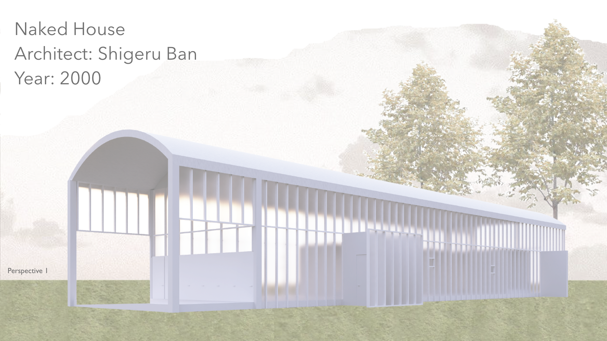

Naked House
Architect Shigeru Ban
Type Residential
Year 2000

The Naked House by Shigeru Ban is a very longitudinal house with a strong sense of repetition and rhythm achieved through the use of various mullions alongside the house.
One of the main focal points of this house is its movable rooms. These modular rooms are used to make distinguished spaces within the house, effectively exploring a fluid spatial hierarchy between public and private zones.